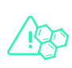

New World ・ New Cybersecurity
SentinelOne Singularity XDR
The Future of Cybersecurity is Autonomous
駭客攻擊活動與滲透手法一日千里，傳統事件處理與回應機制已不足以面對快速演變的攻擊層面與手法
SentinelOne Singularity XDR 提供更快、更全面、更即時且全面自動化的威脅回應機制
透過全面自動化的 AI 偵測引擎，為端點提供最精準、完善的防護


以更有效率的方式應對日益複雜的資安威脅
並保障企業資訊安全
-

SEE
最大化探索企業環境架構、提供高可視性
全面掌握企業內部所有可能資安風險 -

PROTECT
AI 偵測模組、全自動化事件處理、一鍵還原
有效防護所有層面的威脅事件 -

RESOLVE
專利 Storyline 技術、串聯並完整呈現威脅事件
降低後續調查作業時間與人力耗損
SentinelOne Singularity XDR 為端點防護、端點事件偵測與回應、IoT 設備防護、雲端防護及 IT 團隊的運作提供不同的解決方案，並將多種技術整合至統一的管理平台，針對 Windows、MacOS、Linux 及 Kubernetes 提供高效率的 Agent 並針對客戶不同環境架構 (包含實體環境、虛擬環境、VDI、客戶數據中心、混合式數據中心及雲端服務供應商......等) 進行佈署。

脫穎而出
使用 Sention One 降低風險並提高效率
透過全球各地提供的 SaaS 雲端平台統一進行管理，直覺化操作介面及彈性化管理方式，可滿足企業的各式需求。
權限彈性高
長期保留
整合威脅情資
數據擷取量化
生態鏈整合
靈活的架構
情節調整
跨機制授權
API 整合